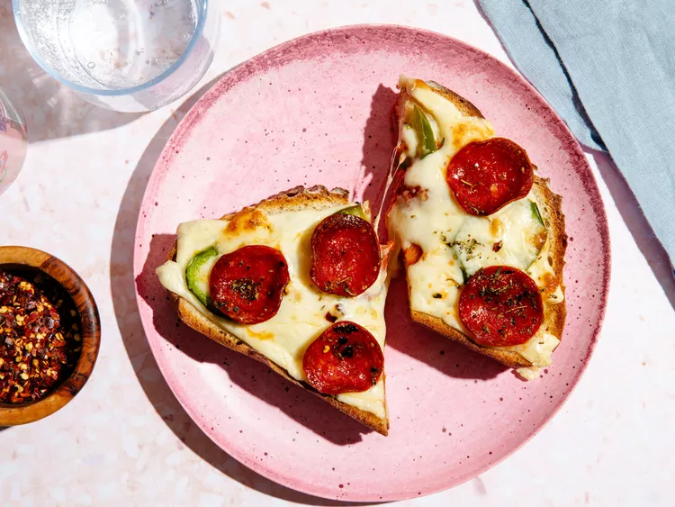

Torta de Milanesa de Pollo

A simple toast covered with melty cheese toppings has been making the rounds on social media, but it's not just a slice of bread with some cheese melted on top. To give this toast the "lava" in its name, you actually stack two pieces of toast together to make a combination of grilled cheese and pizza toast.
- 2 teaspoons butter
- 2 slices sourdough bread
- 1 ½ ounces sliced mozzarella cheese, divided
- 1/2 ounce sliced pepper jack cheese
- 5 slices pickled jalapeno
- 5 slices pepperoni
- 1 tablespoon pizza sauce
- 1/4 teaspoon italian seasoning, divided
- Crushed red pepper, to taste
- Ground black pepper, to taste
- Preheat oven to 375°F.
- Line a sheet pan with parchment paper.
- Spread butter on both sides of each slice of bread and place on the prepared pan.
- Bake, flipping once halfway through, until bread is lightly browned on both sides, about 8 minutes.
- Cover the perimeter of one bread slice with half of the mozzarella cheese, leaving the middle part of the bread empty.
- Top with other slice of bread.
- Use the back of a spoon to make an indentation in the middle of the bread slices, pushing down firmly to reach the bottom slice.
- Cover with remaining ½ ounce mozzarella cheese and pepper jack, followed by jalapeño and pepperoni.
- Garnish with remaining Italian seasoning, crushed red pepper and black pepper.
- Bake until the cheese is melted and golden-brown, about 5 minutes.
- Slice in half and serve.
Home